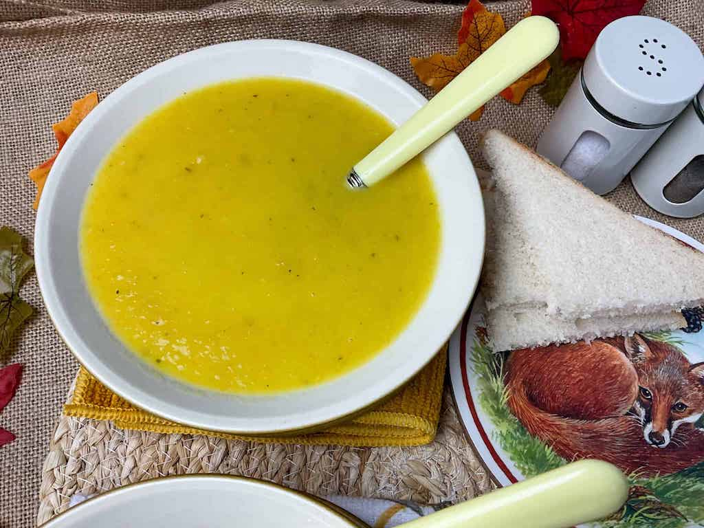

Golden Vegetable Soup

Golden vegetable soup, a classic British soup
This soup is perfect for every-day wholesome veggie meals,
or jazzed up with tasty garnishes and served as a starter for a special meal.
The veggies are cooked in veggie stock or broth, as well as being enriched with a little turmeric powder,
and the result is a lovely golden, sunny, wholesome soup that can be enjoyed chunky or blended smooth.
Ingredients Required
- 1 large yellow onion
- 1 tablespoon olive oil
- 2 celery stalks
- 4 large carrots, peeled and grated
- 1 zucchini, chopped or grated
- 1 broccoli head, chopped
- 3 medium potatoes, peeled and chopped
- 6 cups vegetable stock
- 2 cups water
- 1 tablespoon ground turmeric
- 2 teaspoons salt
- 1/4 cups nutrional yeast
Cooking Instructions
- Set a large stock pot over medium heat. Sauté the onions, garlic and celery in oil for 3-5 minutes.
- Add in the remaining vegetables, beans, liquids, and all spices. Give it a good stir and bring to a boil, simmering for 20 minutes.
- Mix in the nutritional yeast and simmer for 10 more minutes.
- Remove from heat and puree soup using an immersion blender . Salt and pepper to taste. Garnish with fresh chopped chives.